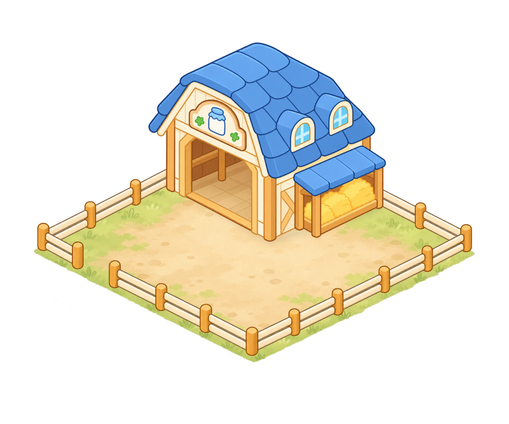
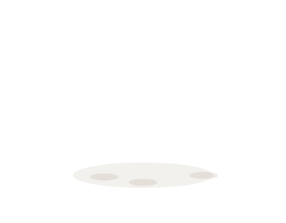
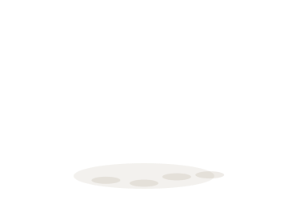
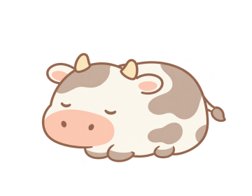
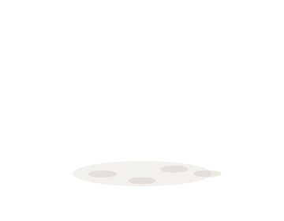
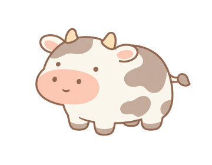
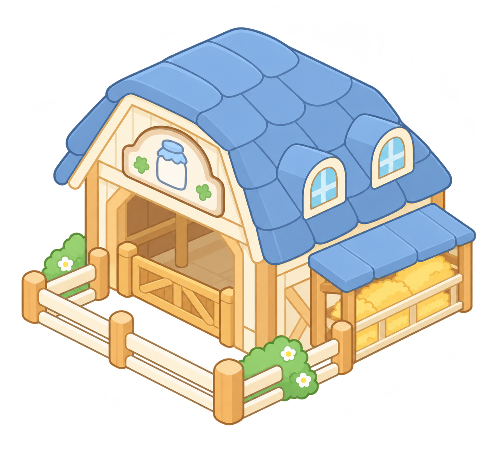
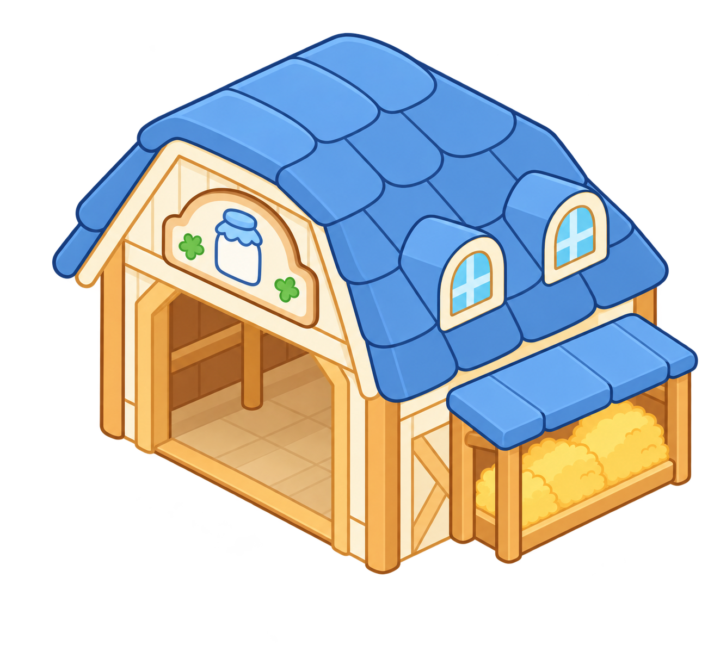

牛棚 · 分层素材
4 × 4 格 · 5 只满栏原动物三态复用蓝屋顶与侧饲草位保留，去掉旧外栏及前半门。
空栏组合

满栏 · 5 只独立动物

逐层检查
开关前栏、地面与动物；切换三态，检查同一落点的表现。
三态尺寸与真实接地点
身体宽度统一为 238 px；红十字为标注的实际接地点，距画布底边仍有 50 px。
站立


休息 / 生产中


待收获


原图与建筑主体对照

